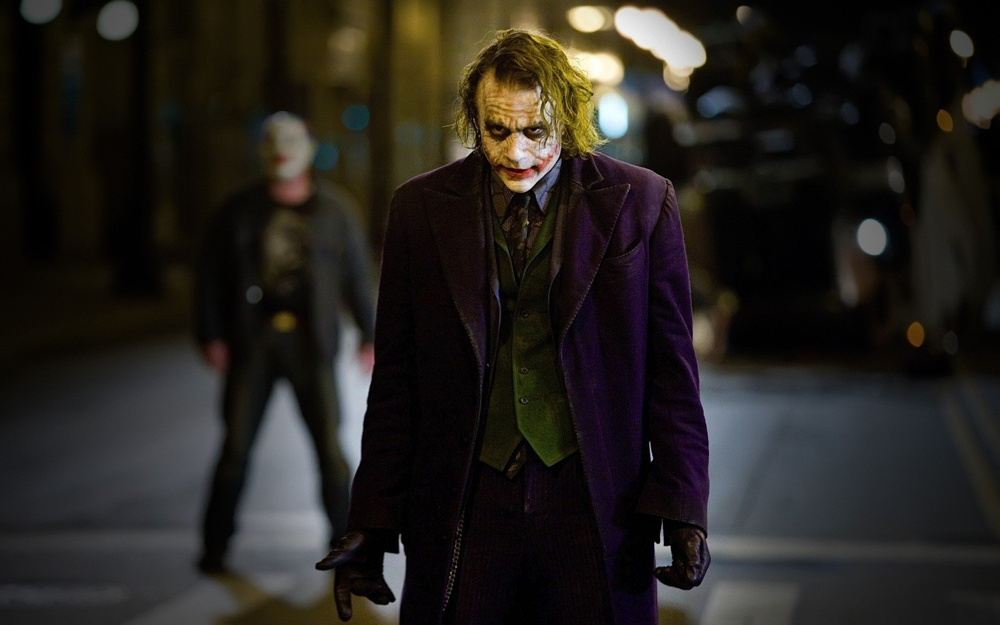
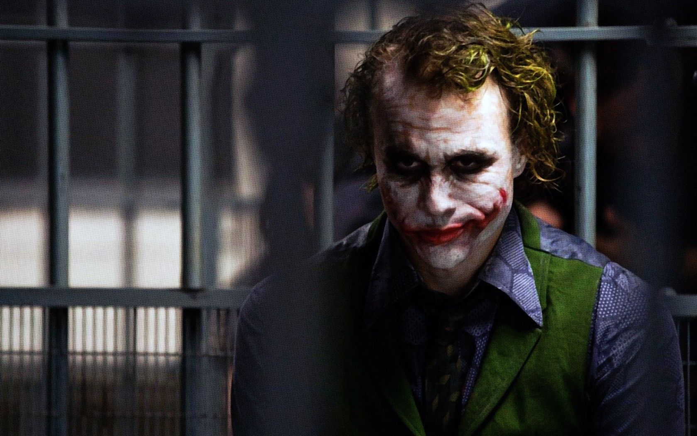
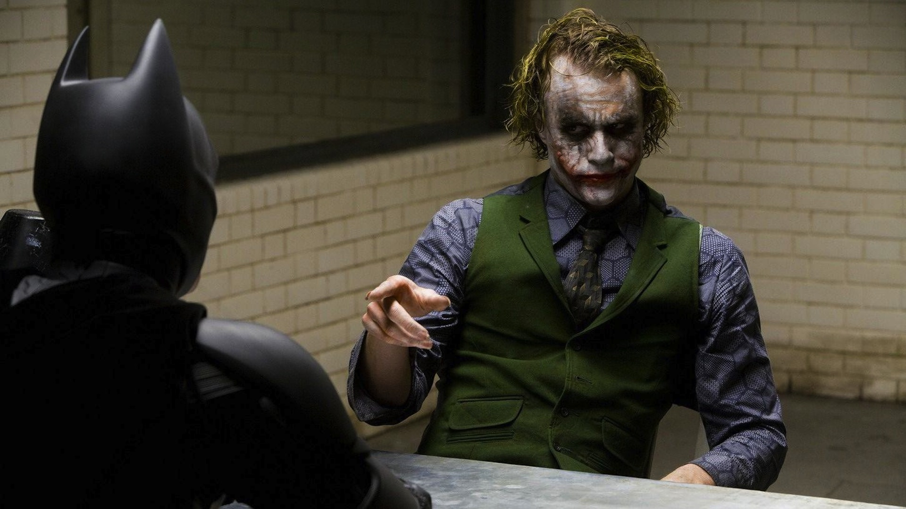

Cуперзлодей вселенной DC Comics, главный и заклятый враг Бэтмена. Джокер носит фиолетовый костюм и сражается при помощи предметов, которые стилизованы под реквизит клоуна
Биллу Фингеру, Бобу Кейну и Джерри Робинсону приписывают создание Джокера, но их мнения о задумке персонажа различаются, каждый из них выдвинул свою версию событий. По утверждениям Фингера, Кейна и Робинсона, Фингер предложил взять за основу образа Джокера персонажа Гуинплена (человек с обезображенным лицом, на котором постоянно находится улыбка) в исполнении Конрада Фейдта из фильма «Человек, который смеётся[en]» Пауля Лени, а Робинсон сделал набросок игральной карты с лицом Джокера.
серийный убийуа
террорист
суперзлодей
Джек Осфальд Уайт
Готэм
  